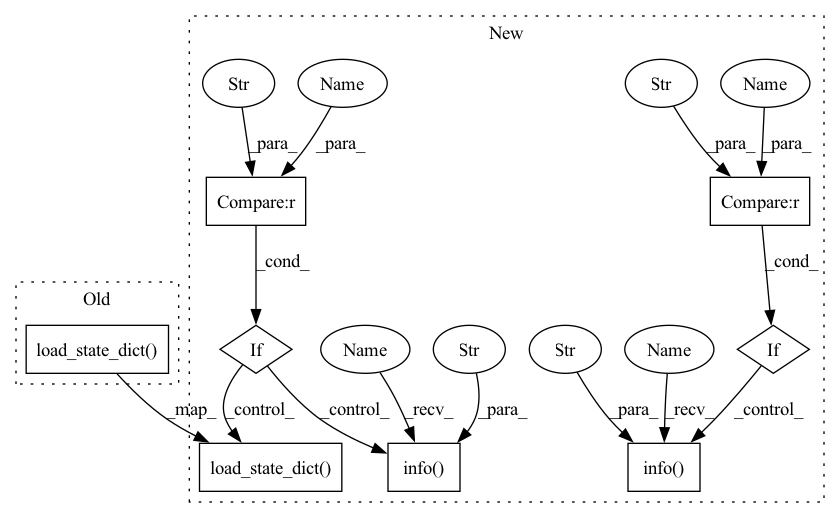

Pattern ID :28635
Before Change
self.model.load_state_dict(ckpt["model_state_dict"])
if is_train:
self.optimizer.load_state_dict(ckpt["optimizer_state_dict"])
self.scheduler.load_state_dict( ckpt["scheduler_state_dict"])
else:
first_epoch = 0
log.info("No checkpoint")
After Change
first_epoch = ckpt["epoch"] + 1
self.model.load_state_dict(ckpt["model_state_dict"])
if is_train:
if "optimizer_state_dict" in ckpt :
log.info(f"Loading checkpoint optimizer_state_dict" )
self.optimizer.load_state_dict(ckpt["optimizer_state_dict"])
if "scheduler_state_dict" in ckpt :
log.info(f"Loading checkpoint scheduler_state_dict" )
self.scheduler.load_state_dict( ckpt["scheduler_state_dict"])
else:
first_epoch = 0
log.info("No checkpoint")
In pattern: SUPERPATTERN
Frequency: 4
Non-data size: 8
Instances Fragment ID: 84537625
Project Name: intel-isl/open3d-ml
Commit Name: fa20dc72a0ada1c1a6c167f01be4564c2e0184af
Time: 2020-08-21
Author: yilingq@umd.edu
File Name: ml3d/torch/pipelines/semantic_segmentation.py
M Class Name: SemanticSegmentation
N Class Name: SemanticSegmentation
M Method Name: load_ckpt(3)
N Method Name: load_ckpt(3)
M Parent Class:
N Parent Class:
M File Name: ml3d/torch/pipelines/semantic_segmentation.py
N File Name: ml3d/torch/pipelines/semantic_segmentation.py
M Start Line: 343
M End Line: 344
N Start Line: 291
N End Line: 301
Before Change
self.model.load_state_dict(ckpt["model_state_dict"])
if is_train:
self.optimizer.load_state_dict(ckpt["optimizer_state_dict"])
self.scheduler.load_state_dict( ckpt["scheduler_state_dict"])
else:
first_epoch = 0
log.info("No checkpoint")
After Change
if exists(ckpt_path):
//path = max(list((cfg.ckpt_path).glob("*.pth")))
log.info(f"Loading checkpoint {ckpt_path}")
ckpt = torch.load(ckpt_path)
first_epoch = ckpt["epoch"] + 1
self.model.load_state_dict(ckpt["model_state_dict"])
if is_train:
if "optimizer_state_dict" in ckpt :
log.info(f"Loading checkpoint optimizer_state_dict" )
self.optimizer.load_state_dict(ckpt["optimizer_state_dict"])
if "scheduler_state_dict" in ckpt :
log.info(f"Loading checkpoint scheduler_state_dict" )
self.scheduler.load_state_dict( ckpt["scheduler_state_dict"])
else:
first_epoch = 0
log.info("No checkpoint")
Fragment ID: 84537624
Project Name: isl-org/open3d-ml
Commit Name: fa20dc72a0ada1c1a6c167f01be4564c2e0184af
Time: 2020-08-21
Author: yilingq@umd.edu
File Name: ml3d/torch/pipelines/semantic_segmentation.py
M Class Name: SemanticSegmentation
N Class Name: SemanticSegmentation
M Method Name: load_ckpt(3)
N Method Name: load_ckpt(3)
M Parent Class:
N Parent Class:
M File Name: ml3d/torch/pipelines/semantic_segmentation.py
N File Name: ml3d/torch/pipelines/semantic_segmentation.py
M Start Line: 343
M End Line: 344
N Start Line: 291
N End Line: 301
Before Change
optimizer = create_optimizer(args, model)
if optimizer_state is not None:
optimizer.load_state_dict( optimizer_state)
use_amp = False
if has_apex and args.amp:
model, optimizer = amp.initialize(model, optimizer, opt_level="O1")After Change
"installed" if has_apex else "not installed", "on" if use_amp else "off"))
// optionally resume from a checkpoint
resume_state = {}
resume_epoch = None
if args.resume:
resume_state, resume_epoch = resume_checkpoint(model, args.resume)
if resume_state and not args.no_resume_opt:
if "optimizer" in resume_state :
if args.local_rank == 0:
logging.info("Restoring Optimizer state from checkpoint" )
optimizer.load_state_dict( resume_state["optimizer"])
if use_amp and "amp" in resume_state and "load_state_dict" in amp.__dict__:
if args.local_rank == 0:
logging.info("Restoring NVIDIA AMP state from checkpoint" )
amp.load_state_dict(resume_state["amp"])
resume_state = None
model_ema = None Fragment ID: 84537621
Project Name: feng-lab/pytorch-image-models
Commit Name: 3d9c8a6489541b1863716a2d20241fa74f1238fa
Time: 2019-08-29
Author: rwightman@gmail.com
File Name: train.py
M Class Name: AnonimousClass
N Class Name: AnonimousClass
M Method Name: main(0)
N Method Name: main(0)
M Parent Class:
N Parent Class:
M File Name: train.py
N File Name: train.py
M Start Line: 193
M End Line: 211
N Start Line: 148
N End Line: 227